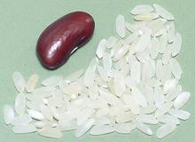
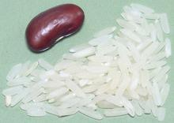
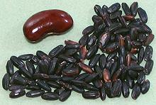

The best known European rices are from Portugal, Spain and Italy. France, Greece and the Balkans produce a very small amount of rice for local consumption.
All significant rice production in Europe is short to medium grain high amylopectin japonica, both due to cool climate and the popular methods by which rice is cooked in the region. The rices produced are very specific to regional cooking methods and are imperfectly interchangeable. These cooking methods have been adopted by people in North America, and the correct rice for each should be selected for good results. Photo by (couldn't relocate) distributed under license Creative Commons Attribution-ShareAlike v4.0 International.
General Information on Rice, and rice
of other regions.
Portuguese rice dishes unlike the Spanish or Italian, tend to be soupy, with plenty of liquid. The Portuguese also like their rice creamy, not "al dente". Traditionalists in Portugal are upset that Carolino rice has been so supplanted by Agulha rice, and outraged that some restaurants are making traditional dishes with parboiled rice - not suitable, but more difficult to screw up in a restaurant kitchen.
Carolino Rice The traditional rice in Portugal is Carolino, a medium grain japonica type rice. "Aríete" and "Euro" are current cultivars. In recent times Agulha, a long grain rice has largely displaced it, even though Agulha is not as suitable for the Portuguese style of rice cooking. Some cooks are even using parboiled rice, which doesn't work at all well. Effort is ongoing to restore Carolino rice to popularity and to improve Portugal's rice cuisine. The photo specimens were 0.275 inch long and 0.095 inch wide (7.0 x 2.4 mm). Agulha rice This long grain "needle rice" is currently the most common Portuguese grown rice, and often used where it shouldn't be. The photo specimens were 0.285 inch long and 0.075 inch wide (7.2 x 1.9 mm). One cup of this rice needs 1-3/4 cups of water and cooks in 25 minutes. |
Spain, through which rice entered Europe, cooks it rather differently from any other place in the world. Paella is named for the pan it is cooked in, a shallow uncovered pan. This requires a super absorbent rice, so most rice simply will not do. If Spanish rice is not available, a risotto rice like Carnaroli can be used (risotto is of Spanish origin), but the results are not quite the same.
The Spanish also cook Arroz, which is the same kind of rice cooked in a cazuela, either in the oven or on the stove top. Arroz may be dry or very moist. Paella is always dry, in other words, all the liquid is absorbed by the rice.
BombaThis is considered the best rice for paella. It is relatively expensive and the package will always advertise Bomba if that's what is in it. This rice is grown in Murcia and Valencia. One desirable feature of Bomba is that it is not as easily ruined by overcooking as other varieties. The normal recommendation for paella is there should be twice as much broth as rice, but with bomba you may need just a touch more as it is very absorbent. The grains are tiny, with the photo specimens typically measuring 0.190 inch long and 0.115 inch wide. Grown in Valencia, 2014 US $5.99 per 1/2 kilo (1.1 pounds). ValenciaValencia is the main rice growing region of Spain. Valencia rice is considered excellent rice for paella. If the package is labeled "Valencia" it may contain Arroz Fonsa, Gleva, Bahia, or Senia, but not Bomba, unless Bomba is specified on the label. The general recommendation for paella is twice as much broth as rice. The photo specimens were typically 0.233 inch long and 0.129 inch wide. 2014 US $3.79 per kilo (2.2 pounds). CalasparraThis rice, grown in Murcia, is suitable for paella, but is also liked for arroz cooked in cazuela because it is more resistant to overcooking than most varieties. Delta del EbroA rice suitable for paella grown in Tarragona. |
The risotto rice category includes a number of Italian varieties, all medium grain, that absorb a lot of water and develop a creamy outside, but with a moderately firm core. Do not rinse rice for risotto, the starch on the outside becomes part of the texture. The three varieties considered best are Carnaroli, Maratelli and Vialone Nano. The Italians do use some rice other than risotto varieties, but not a lot.
Risotto is cooked quite differently from most rice dishes. The rice is first fried very lightly in oil or butter. usually mixed with onions and other ingredients. It is then cooked with a lot of stirring, with broth stirred in only as needed - always half the remaining amount until the last 1/4 cup.
Risotto Rice Designations These are Comune, Semifino, Fino and Superfino. These designations have no relationship to quality, they are calculated from the length to width ratio of the grains.
ArborioThis is a superfino risotto rice, the best known risotto rice outside Italy, but within Italy it has been displaced by others. It takes longer to cook than the more popular rice, absorbs less water and is very cranky, going from under cooked to over cooked "in the blink of an eye". It is considered unsuitable for restaurant service. The photo specimens, from Italy, were 0.275 inch long and 0.128 inch wide (8.4 x 3.9 mm). BaldoThis is an Italian, medium grain rice developed from Arborio crossed with Stirpe 136 rice and now popular in most Mediterranean countries. It is particularly favored by restaurants because it holds up better than Arborio to the practice of partially cooking and then chilling risottos, to be finish cooked to customer's orders. The photo specimens, grown in Turkey, were typically 0.285 inch long by 0.122 inch wide (7.2 x 3.1 mm). CarnaroliGrown in a small region of northern Italy between Milan and Turin, Carnaroli is perhaps the most prestigious Italian risotto rice and is generally reserved for the most refined dishes. Compared to arborio the grains are larger and while they become exceptionally creamy on the outside they hold their shape at the core, due to a higher amount of amylose starch in the center, making for a better texture. The photo specimens, grown in Argentina, were typically 0.260 inch long and 0.130 inch wide (6.6 x 3.3 mm). Vialone NanoThis semi-fino rice is one of the most favored risotto rice varieties, especially in the region around Venice. The photo specimens, from Italy, were typically 0.230 inch long and 0.135 inch wide (6.6 x 3.3). Other Risotto Rice Varieties
Nero Venere This is not a risotto rice, but has become popular as a color contrast, particularly served with green vegetables. This medium grain rice is grown in the Padana Delta of the Po River in northern Italy, just a bit south of Venice. It was developed as a hybrid of the China Black rice. Hybridization was necessary because the original China Black rice could not withstand the colder winters of the Po Valley, but the result is very much like the Chinese parent. The photo specimens, purchased from a local Italian market in Los Angeles, were typically 0.235 inches long by 0.107 inch wide (6.0 x 2.7 mm). A cup of this rice needs about 2-1/4 cups of water and about 55 minutes of cooking to make about 3 cups. The grains remain quite firm and very separate, with a pleasant flavor and deep color. |